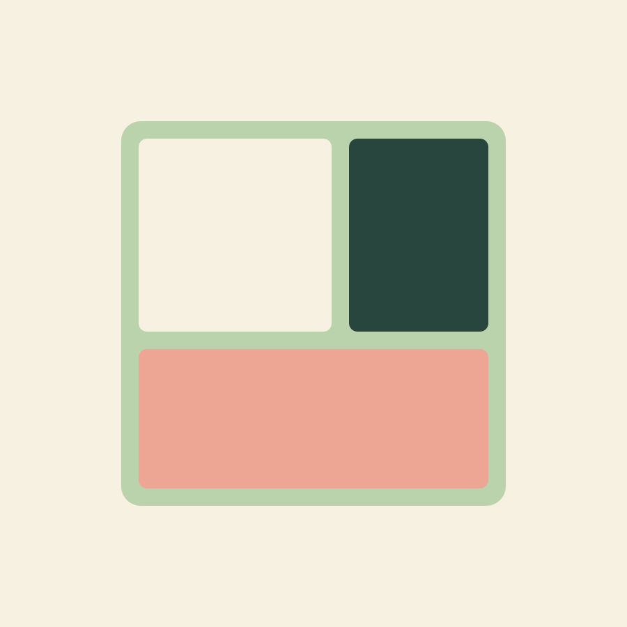
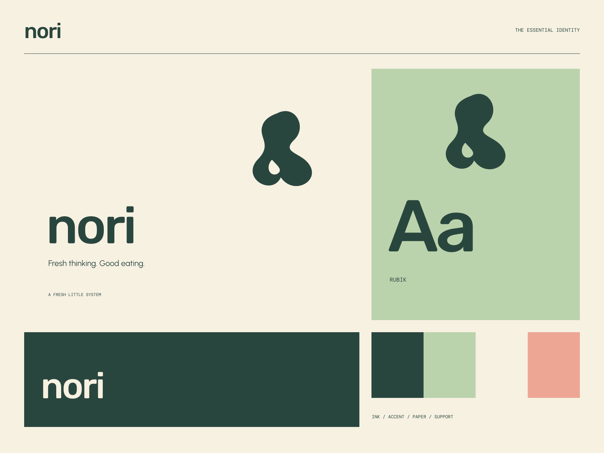

01
Plants at the center
A bright menu that starts with the good things in season.
PLANTS FIRST / ALWAYS FRESH
Fresh thinking. Good eating. Fresh things, thoughtfully together.

A coherent little world
Fresh things, thoughtfully together. Fresh thinking. Good eating.
01
A bright menu that starts with the good things in season.
02
Simple combinations with a considered balance.
03
Food for the everyday that still feels like a small pleasure.

The point of view
Sculptural vegetable cutouts, playful bento compartments, small ingredient labels, and crisp friendly type. The food itself becomes a highly graphic visual language.